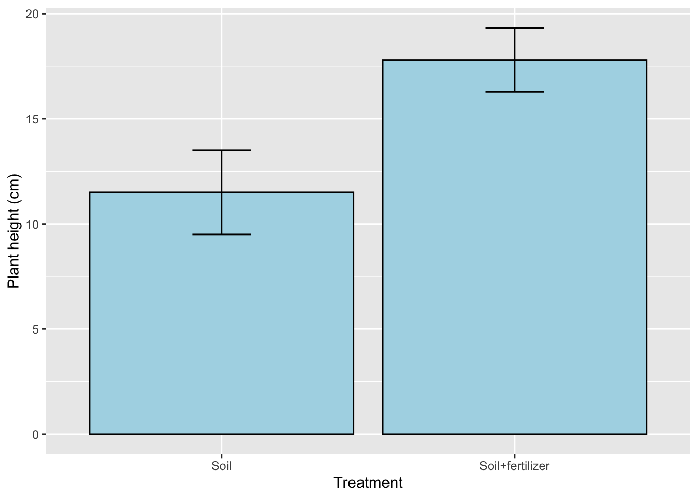
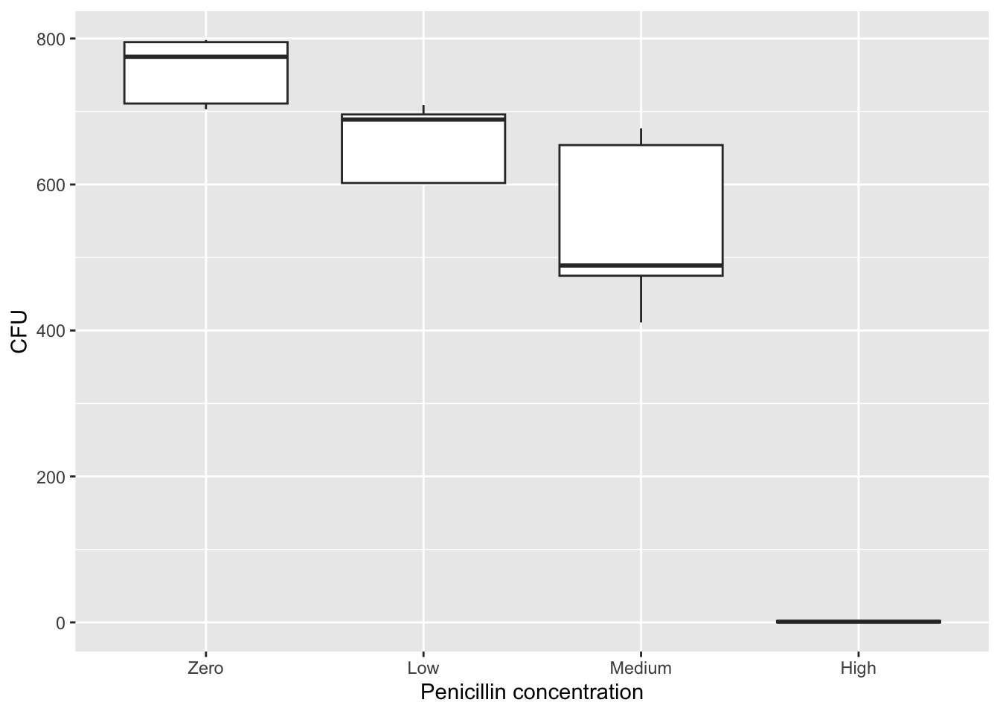
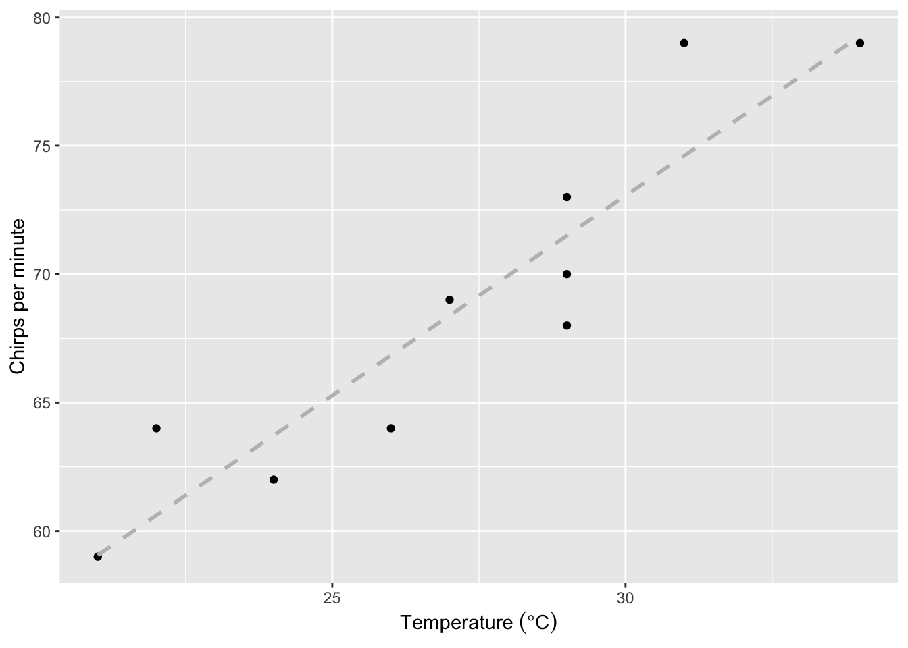
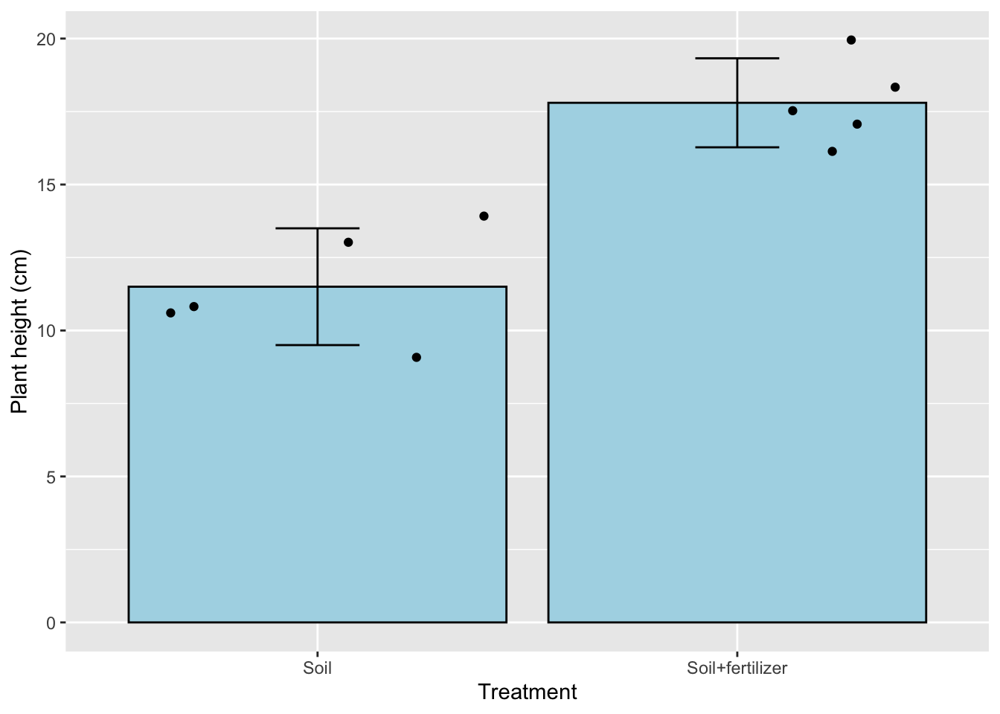
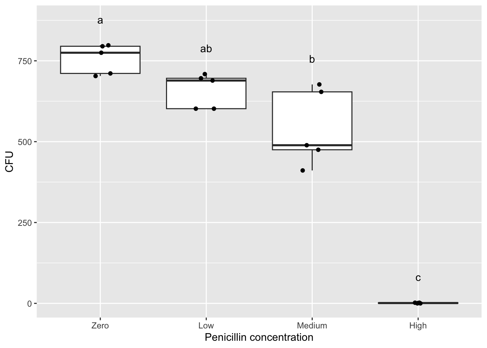

# Run these only once when you first start the project:
install.packages("ggplot2")
install.packages("Rmisc")
install.packages("reshape")
install.packages("agricolae")
install.packages("multcomp")
# In most command-line interfaces, words after # are not read by the software and serve as notes.
# We will explain the R syntax below in "Importing data into R"Big Red Statistics in R
I. Overview of the scientific method
Biologists are interested in organisms (either unicellular or multicellular), populations, and/or communities in a variety of contexts, including their molecular biology, physiology, growth, development, behavior, ecology, and evolution. Regardless of their specific interest, biologists usually rely on the scientific method to obtain information if it is not already available in the scientific literature. The scientific method consists of several steps: 1) making observations, 2) asking a question, 3) forming a hypothesis, 4) designing and executing an experiment to test the hypothesis, 5) analyzing the data (including a statistical test, if appropriate), 6) interpreting the results, and 7) communicating the results (usually with a table or graph).
An experiment often involves one or more variables; these may be numeric variables, expressed as numbers (e.g. “2.4 cm”), nominal variables, expressed as named categories (e.g. “female” vs. “male”), or ordinal variables, expressed as positions (e.g. “first’’ vs. ``second” vs. “third”). The type of variable(s) determines the type of analysis that should be applied. In the case of numeric variables, the data may be continuous corresponding to an infinite range of values (e.g. as when measuring the length of a leaf) or discrete, corresponding to whole numbers (e.g. as when counting the number of stomata in a leaf).
In most cases, an experiment involves determining if a dependent variable is affected by an independent variable (e.g. as when counting the number of offspring – dependent - to determine if temperature – independent - has any effect on reproduction), or determining if there is a relationship between the two variables that may or may not involve cause and effect (e.g. as when you measure the weight of an organism to determine if it is related to the height of the organism).
The word “hypothesis” is used in slightly different ways in experimental design and statistics. Typically, when designing an experiment, the hypothesis is an educated guess about what you think might happen. It is generally expressed as a relationship between your two variables; e.g., plants that receive more light (independent variable) will grow taller (dependent variable). But when you go to analyze your data with statistics, you will use the term hypothesis with more nuance. Statistical tests help you determine if there is a significant relationship between your variables. When you do a statistical test, the default assumption is that there is NO relationship between your variables (amount of light has no impact on plant height). This default is called the “null hypothesis”. Thus, the null hypothesis is typically the opposite of the experimental hypothesis. The experimental hypothesis (referred to statistically as the alternative hypothesis) predicts a specific relationship between variables; the null hypothesis predicts no meaningful relationship between variables.
If the results of an experiment are consistent with the null hypothesis, and thus do not support the biologist’s experimental hypothesis, then the researcher must conclude that there is no evidence of a significant relationship between the variables. The experimental hypothesis is either rejected or it is modified and subjected to additional testing. If the results of an experiment are inconsistent with the null hypothesis, then there IS a significant relationship between the variables which may support the experimental hypothesis, but the hypothesis may be subjected to additional testing as it is replicated and refined.
An experiment should be controlled to ensure that the results are not attributed to confounding variables (as when the dependent variable is affected by something other than the independent variable). In some cases, the biologist might utilize an experimental group (e.g. individuals that receive a treatment) as well as a control group (e.g. individuals that do not receive a treatment). In other cases, the biologist might utilize a positive control (which should produce results) and/or a negative control (which should not produce results). In all cases, it is ideal to perform multiple, identical trials (or replicates) and to test multiple subjects (i.e. a large sample size or large number of replicates) to ensure that there is a consistent outcome for the experiment.
There are additional ways to deal with confounding variables; these are by randomization and by matching. If you randomize the collection of your data, then you avoid the possibility that the effects you observe are due to confounding variables. For example, if I’m testing the effects of fertilizer on growth, but I chose all of my control plants in an area full of sunlight and all of my experimental plants in an area of heavy shade, then the differences in growth due to my fertilizer manipulation could be masked by the differences in sunlight. The remedy in this case is to randomly select control and experimental plants in both shady and sunny areas. Another way to control for confounding variables is through matching your control and experimental samples. As in the example above, if I placed a control and an experimental plant near each other (‘matching the samples’) in each habitat then the differences I observe are less likely due to differences in environmental variables that could confound my results.
A hypothesis becomes a theory if the results of many additional, independent tests continue to support it. A theory is an explanation that is supported by such a wide body of evidence that it is accepted as fact. Thus, biologists’ use of the term “theory” differs significantly from that of the general public who use the term when referring to speculation. One example of a theory is the theory of evolution, which is accepted as fact although there is still much for biologists to learn about natural selection and other mechanisms that result in a change in the relative frequency of alleles within a population over different time scales (i.e. micro versus macroevolution).
II. The importance of statistical tests
Biologists often apply a statistical test for a less biased approach to interpreting the results of an experiment. A statistical test will estimate the probability of producing the observed result under the null hypothesis. In particular, it will yield a p value, which is the probability of producing the observed result by chance when there is actually no relationship between variables (e.g., when the null hypothesis is true). The p value ranges from 0 to 1, with 0 being no chance of producing this data set by chance if there is no relationship, and 1 being a 100% chance of producing this data set when there is no relationship. If the p value is less than 0.05, then the null hypothesis is rejected and the results are referred to as “significant,” indicating that there is a significant relationship between the variables. It is important to note that the value is a probability and thus the conclusion you draw from the p value could still be inaccurate as in the case of false positives (referred to as Type I errors), in which the data deviate from the null hypothesis by chance, and false negatives (referred to as Type II errors), in which the data erroneously support the null hypothesis (often due to the sample size being limited). Let’s reiterate those definitions:
Type I error (false positive): for your sample, the p value is <0.05 indicating a relationship between variables, but there would be no relationship if you measured a different or larger population.
Type II error (false negative): for your sample, the p value is >0.05 indicating no relationship between variables, but there would be a relationship if you measured a different or larger population.
The threshold that marks significance for the p value is referred to as the α value. The choice of α = 0.05 is standard, but arbitrary. It is possible to select a different significance level prior to the experiment. However, if you increase your significance level, say to 0.1, you increase your chance of a false positive, and if you decrease your significance level, say to 0.01, you increase your chance of a false negative.

III. Descriptive statistics
Mean
The mean (\(\bar{X}\)) (often referred to as the average) corresponds to the sum of the measurements divided by the number of measurements (as in the case of 10, 40, 25, 35, and 40, which produce a mean of 30). In the case of an odd number of measurements, the median corresponds to the measurement in the middle when all of the measurements are sorted from lowest to highest (as in the case of 10, 40, 25, 35, and 40, which produces a median of 35). In the case of an even number of measurements, the median corresponds to the mean of the two measurements in the middle when all of the measurements are sorted from lowest to highest. Finally, the mode corresponds to the most common measurement (as in the case of 10, 40, 25, 35, and 40, which produces a mode of 40).
Standard deviation
The standard deviation (s) is a measure of the distribution of the data (i.e. extent of variation among different subjects) and weights each value by its distance from the mean. There is an increase in the standard deviation if there is a large distance of the values from the mean (as in the case of 10, 40, 25, 35, 40, which have a mean of 30). In contrast, there is a decrease in the standard deviation if there is a small distance (if any) of the values from the mean (as in the case of 25, 30, 35, 30, 30, which have the same mean of 30). The result for each group is summarized as the mean “plus or minus” the standard deviation (\(\bar{X}\) ± s). This gives you a lot of information about the data set. If someone describes a data set as the mean plus or minus one SD, they are giving you the range into which 68% of the data points fall. Mean ± 2 SD gives you the range of 95% of the data, and Mean ± 3 SD encompasses 99% of the data. Note that on a bar graph or boxplot the standard deviation is sometimes represented by vertical lines known as error bars that extend from the mean in both an upward and downward direction.
Standard error
The standard error of the mean (SEM), or simply the standard error (SE) is another common way to state the variation around the mean. Instead of telling you about the range of the data set, it tells you the range of the “true” mean. If you added one sample to your study or took one sample away, the mean may change a little. So your mean is correct for your group of samples, but not necessarily for the whole population of all organisms that could have been in your study. SEM tells you that if you could have included every possible subject or sample - the mean probably would have been somewhere in this range. Once you have calculated the standard deviation of the mean (s), it is easy to calculate SE.
n = the number of samples or trials or replicates. This technique results in a smaller number than the standard deviation (s) offers, and thus often makes graphs with error bars look smaller. Whether to use s or SE in reporting your statistics and making error bars varies depending on the application, style, and field. Be sure to find out what your instructor prefers for your assignments!
Coefficient of variation
The coefficient of variation (CV) corresponds to the standard deviation divided by the mean and is useful when comparing the amount of variation for one variable among groups with different means.
The variance in data sometimes fits a normal distribution (i.e. bell curve on a graph); such data are subject to a parametric test. However, the variance in data sometimes does not fit a normal distribution; such data are subject to a non-parametric test (addressed in advanced coursework).
IV. Key steps in data analysis using R
Here is the basic steps to analyze your data in R.
Access Posit Cloud (https://posit.cloud/) online or RStudio on your computer.
Create or open a project.
Create or open an R script.
If you are starting a new project, install a set of required packages by entering a code in the Script Panel and running it.
Prepare R to use those packages by ‘loading’ the packages. Do this every time!
In Excel, save your data into a .csv file. If needed, edit your data in Excel.
Upload the .csv file into Posit Cloud or RStudio.
Read your data file into R by entering a code.
If needed, generate descriptive statistics on one or more of the variables in your data set.
If not done prior to data collection, decide which inferential statistical test to use, such as a t-test, ANOVA, linear regression, or Chi-squared test.
Locate the general code for the test you want to use and type (or copy & paste) the code into the Script Panel in R.
If needed, substitute the names of your data file and variables into the general code.
Press
Runin the upper right corner of the script panel. The output will appear in the Console Panel.Trouble-shoot errors that show up in the Console Panel.
Once the code is running correctly, decide what the output is telling you. For instance, do the findings lead you to accept or reject the test’s null hypothesis?
If needed, run a post hoc test.
Visualize the findings of your statistical test by making a graph in R or table in Excel.
Export or copy your graph into your lab assignment or into your research paper. Also record the needed statistical output, such a F or P values, so you can finish your lab assignment or use the output when writing a research paper.
Save the R script.
V. Start using R
A. Access R via Posit Cloud or RStudio
R is a command line program in which you interact through text (the command line) instead of a graphical user interface (e.g., Windows, Excel, etc.). We provide two options for running R through an integrative environment called RStudio. In both options, you will not interact directly with R. You will run RStudio through Posit Cloud or RStudio software downloaded to your computer. Your instructor will let you know how you should use R for the class.
The online version of RStudio is called Posit Cloud. Sign up for an account here. The “Cloud Free” option will be sufficient. Do not choose the PLUS or other options. Your instructor will send you a link to get access to a shared class space, which has more memory and run time allocations than the “Cloud free” account.
If directed by your instructor, you can download RStudio and install it on your computer. Depending on the version of RStudio and R, the interface and commands could be slightly different from the online version. Follow the instructions here to download and install both R and RStudio.
B. Project setup and file transfer
Online - Posit Cloud
For the online option, you will need to upload data to the cloud or download output files from the cloud. The benefit is that you can use R anywhere and on virtually any machine with the internet (even a tablet)!
Once in the classroom space, you will see project assignments that your instructor has created for you. Your instructor will also have access to your assignments in this space. In some cases, your instructor may have created a template that includes pre-installed packages.
To create your own project on Posit, click New Project > New RStudio Project on the upper right. You should rename your project(s) as directed by your instructor.
Once the project is deployed, on the lower right panel, click the Upload button and choose the data file from your computer.

To download a file, check the box next to the file you want to export, click More > Export… and click Download.

Local - RStudio
If you choose the local option, you should set up a project and a folder that is associated with this project where all files will be stored.
For example, create a folder on your desktop that is called “R_is_fun”. Start RStudio, click File > New Project… and select Existing Directory and browse to the folder R_is_fun.
Then click Create Project. Now you can access all files in the folder R_is_fun (without indicating the full pathname). Everything you saved in R will also appear in this folder.
C. Starting an R script
Once your project is opened, you should create an R script. The R script is a text file in which your R commands and notes will be saved.
To do this, click File > New File > R Script.
To save the R script, click File > Save and give it an informative name. You should rename your R script(s) as directed by your instructor. The R script will be saved to a file with a .R extension. It is a text file that can be opened in any text editor.
If you are opening an existing project, the R scripts from your previous run are typically opened automatically.
D. The RStudio Interface
Let’s introduce what is being displayed in Posit and RStudio. With an R script opened, you should see a default four-panel interface.

\(A\) The upper left is the R Script Panel. This is where you will write and save your R script or commands. The panel should be saved regularly, which serves as a record of all the commands that you have (or are planning) to run. The scripts here are not being read by R until you click the
Runbutton on the top right.\(B\) The lower left is the R Console Panel, which is the innate command line interface of R. A command from the R script above will be displayed here when you click the
Runbutton, which is when R “reads” your command. Any output or error from R will also be displayed here. You could type your command directly here, but it will not be saved in the R script.\(C\) The upper right is the Environment Panel. Objects that are read or generated in R will be displayed here.
\(D\) The lower right is the Files Panel. It displays the files in your working directory. In Posit cloud, you will see files uploaded to the course space by your instructor. It also displays figures in the
Plotstab if your commands result in graphical outputs. ThePackagestab indicates which packages are currently installed, while check marks indicate which ones are loaded in the library. TheHelptab displays the manual for each package and command.
For a more comprehensive introduction to RStudio, see here.
E. R packages
Many packages are available to expand the basic functions of base R. This is similar to adding a plug-in or extension to your web browser.
Installing packages
To use these packages, you have to install them when you start the project for the first time. You will not need to install them again when you start an old project. Then you can load the package as libraries.
We will install a few packages that will be used in this document:
Copy or type lines of codes below and paste them into the Script Panel (top left, Panel A), exactly as shown. The gray box below is called a “code chunk”. In the online version of this guide, you can copy everything from a code chunk using the copy button that appears when you hover your cursor on the code chunk.
Highlight all the codes and hit the
Runbutton on the top right of the Script Panel. Alternatively, use the keyboard shortcutCtrl+Enter(PC) orCmd+Enter(Mac).You may be asked to select a mirror to download the packages and enter
Yto update packages.A number of output should show up in the Console Panel to report the installation progress.
Alternatively, you can install packages from the Package tab on the Files Panel (Panel D). Click Install and type the package name in the box (it will auto-complete for you to prevent typos).
Loading packages
Then, we will load these packages such that functions from these packages can be used. Note: You WILL need to run library() for each package EVERY TIME you start a new Project. But you will not need to install them again.
# Run these every time before you run anything else:
library("ggplot2")
library("Rmisc")
library("reshape")
library("agricolae")
library("multcomp")VI. Importing data into R
A. Preparing a .csv file from Excel
Your data should be entered and stored in spreadsheet programs such as Microsoft Excel before being imported into R. While R can read Excel files (A) such as .xls and .xlsx, data are typically saved into a simpler text format such as .csv (comma-separated values, B), where each row appears in a new line and each column is separated by a comma (,). Note that there is a header line (the first row) that specifies the column names.

A spreadsheet in Excel can be exported into .csv by clicking File > Save As… and selecting CSV in the drop-down manual under File Format.
Try doing this with name.xlsx which can be downloaded from here (https://tinyurl.com/2k2aksxf)
Place the .csv file into your project’s directory (e.g., R_is_fun) or upload it to your project in posit.cloud using the Files pane.
Now, you should see the .csv file listed in the File Panel (Panel D) of RStudio.

B. Loading a .csv file into R
Note that while the name.csv file is in the file panel, it has not been loaded into R yet. It is merely present in the folder on the cloud (or your computer). To load the file into R, in the R Script Panel (Panel A), type or paste:
data_name = read.csv(file = "name.csv")Here is a breakdown of the R syntax:
data_name is a name of the object (in the form of a dataframe) that we are assigning to the output of read.csv(file = "name.csv") via a = sign.
read.csv() is a function. It is typically shown in blue.
You can pass “arguments” inside the () to specific how the function should operate. They are typically shown in various shades of green. A function can have no argument, or many arguments separated by commas (,).
In read.csv(), the first argument is file and we pass the value "name.csv" to this argument after the =.
The value of an argument can be a number, logical argement (Ture/Fales), the name of an object in R, or text. WIth some exceptions (e.g., in ggplot), text values should be under a quotation mark (” “) to distinguish it from the name of an object.
Since R knows the expected sequence of arguments (this is called positional argument), you could skip the argument’s name and just write: data_name = read.csv("name.csv")
There are many other arguments in read.csv. To see them, type ?read.csv in the Console Panel (Panel B) to display the Help page in the File Console (Panel D). | For now, the default works (e.g., header = TRUE, sep = “,”) because name.csv has a header row and values are separated by “,”. So data_name = read.csv("name.csv") is doing the same opreation as data_name = read.csv("name.csv", header = TRUE, sep = ","). | Because of this default arguments, R may read a csv file incorrectly if it does not have a header line!
The code above will read name.csv into R and save it as an “object” called data_name. An object is data that is stored in R. Objects are different from files that are being imported into Posit Cloud and RStudio. Objects can be used in the Script or Console Panel (e.g., by running data_name), but files in the File Panel cannot.
Now the object data_name will appear in the Environment Panel (Panel C).

In the environment panel, you can click on the object to open it in a new tab in the Script Panel. Note that doing it actually sends a code to the Console Panel as View(data_name)
You can show the content of the object in the Console Panel by running (or “calling”) it directly:
data_name First_name Height_ft Age Academic_standing
1 Denzel 5.8 24 Sophomore
2 Claire 5.0 20 Junior
3 Jack 7.2 29 First-year
4 Quisha 5.7 26 Sophomore
5 Carlos 4.9 24 First-year
6 Julio 5.3 28 Sophomore
7 Hiromi 6.0 26 Senior
8 Jiang 5.5 28 Junior
9 Isha 4.4 18 SophomoreAs shown above, when you view an object in the console panel, the file has loaded correctly. The 9 rows and 4 columns are present, as well as the column names.
The object is a dataframe, which stores a two-dimensional table. There are many other classes of R object, see here for other classes in R. We will only be using dataframes in this guide.
class(data_name)[1] "data.frame"Tips:
After you type a command (e.g.,
aov()), you can hit the tab key and RStudio will show the possible arguments.RStudio will auto-complete the close bracket.
If you need to edit your data, the easiest way is to to it in Excel, then upload it to Posit Cloud and read it into R. See the Appendix if you need to edit your data in the .csv file or object within R.
VII. How to generate descriptive statistics
Let’s say that you measure the length of 12 seashells. Here are the instructions for determining the mean and standard deviation using R:
Follow the instructions in the previous section to enter your continuous data into a new dataframe called seashells. In this case your dependent variable is Length_cm of the seashells.
For example, you can first enter your data into Excel, save it as seashells.csv, and upload that to your project’s directory in Posit.

Then you can load it as a dataframe called seashells
seashells = read.csv("seashells.csv")Alternatively, you also run this code to manually enter the data:
seashells = data.frame("Length_cm" = c(3, 4.5, 3.1, 4.2, 4.4, 4, 3.6, 3.7, 3.1, 2.8, 4.3, 5))Either way, your data should look like this:
seashells Length_cm
1 3.0
2 4.5
3 3.1
4 4.2
5 4.4
6 4.0
7 3.6
8 3.7
9 3.1
10 2.8
11 4.3
12 5.0You can check whether Length_cm is continuous (i.e, numeric in R).
class(seashells$Length_cm)[1] "numeric"$ is an “operator” to get a column from a dataframe’s table.
seashells$Length_cm means that from the dataframe seashells, show the column called Length_cm. | | Then, the function class() is applied to the column to examine the “class” of the column, which will typically be “numeric” for a continuous variable and “character” for a categorical variable.
Generate a quick histogram of the data, if you have a continuous variable.
hist(seashells$Length_cm)Generate basic summary statistics:
summary(seashells$Length_cm) Min. 1st Qu. Median Mean 3rd Qu. Max.
2.800 3.100 3.850 3.808 4.325 5.000 You can generate the mean, standard deviation (SD) and standard error (SE) using the function summarySE() in the package Rmisc:
summarySE(data = seashells, measurevar = "Length_cm") .id N Length_cm sd se ci
1 <NA> 12 3.808333 0.7012435 0.2024316 0.4455489You can also calculate the means and standard deviations of different groups at the same time. Let’s say you measured 12 shells again, but in this experiment you used 3 different species. You can calculate the means and standard deviations of the different species by inputting your data in the following way:
# We will add another column to the dataframe
seashells$Species = c(rep("Species1", 4), rep("Species2", 4), rep("Species3", 4))
# To view the data:
seashells Length_cm Species
1 3.0 Species1
2 4.5 Species1
3 3.1 Species1
4 4.2 Species1
5 4.4 Species2
6 4.0 Species2
7 3.6 Species2
8 3.7 Species2
9 3.1 Species3
10 2.8 Species3
11 4.3 Species3
12 5.0 Species3Then use summarySE() with an additional groupvars argument:
summarySE(data = seashells, measurevar = "Length_cm", groupvars = "Species" ) Species N Length_cm sd se ci
1 Species1 4 3.700 0.7615773 0.3807887 1.2118394
2 Species2 4 3.925 0.3593976 0.1796988 0.5718819
3 Species3 4 3.800 1.0295630 0.5147815 1.6382645With this data, you can make a table in Excel to summarize descriptive statistics of seashell lengths from three different species.

VIII. Inferential statistics & graphs
Step One: Figure out what statistical test you should use!
How do you do that? First, you should be able to clearly write out your experimental question, your hypothesis, and identify your dependent and independent variables.
Once you have your variables identified, determine if they are continuous (measurement) data or nominal (categorical) data. Now you can use the chart below to figure out which type of statistic is right for you. Note that each combination of variable types also has a type of graph or table that is typically used to display the data! Instructions for how to run each stat and make each figure are given in the sections that follow.

A. T-test
Two-sample t-test
A t-test is used when the independent variable is nominal (categorical) and has exactly two categories (such as an experimental group and a control group) and the dependent variable consists of continuous (measurement) data. In this case, you are determining if there are differences in the means of the dependent variable between the two categories of the independent variable.
Let’s say that you want to test if a fertilizer has a significant effect on the growth of plants. You measure the height of 10 plants, 5 grown with just soil and 5 grown with soil and added fertilizer. Both groups are grown for the same length of time. Here are the instructions for performing a t-test (for comparing two groups) using R:
According to VI. Importing data into R, import fertilizer.csv from the shared drive (here) as a daraframe named fertilizer. Also, be sure you are Loading packages.
(See Appendix 3. Create dataframes in R if you want to create a dataframe manually in R.)
# This is what the dataframe should look like:
fertilizer Treatment Plant_height_cm
1 Soil 10.5
2 Soil 13.0
3 Soil 9.0
4 Soil 11.0
5 Soil 14.0
6 Soil+fertilizer 17.0
7 Soil+fertilizer 18.5
8 Soil+fertilizer 20.0
9 Soil+fertilizer 16.0
10 Soil+fertilizer 17.5# The data has two treatment levels:
unique(fertilizer$Treatment)[1] "Soil" "Soil+fertilizer"To test whether Plant_height_cm is different between Treatment , in other word, whether Treatment affects Plant_height_cm, we will use t.test():
t.test(Plant_height_cm ~ Treatment, data = fertilizer, alternative = "two.sided", var.equal = TRUE)
Two Sample t-test
data: Plant_height_cm by Treatment
t = -5.6014, df = 8, p-value = 0.0005094
alternative hypothesis: true difference in means between group Soil and group Soil+fertilizer is not equal to 0
95 percent confidence interval:
-8.893614 -3.706386
sample estimates:
mean in group Soil mean in group Soil+fertilizer
11.5 17.8 The argument alternative can also be “greater” or “less” if you have an a priori reason to test for a directional difference between groups.
In this case, the p-value is 0.0005. We reject the null hypothesis that Treatment has no effect on Plant_height_cm. Hence, we can write a summary statement like:
Plants grown in soil with fertilizer were taller than plants grown soil with no fertilizer (t = -5.601, d.f. = 8, p = 0.0005 or p < 0.001)
Visualization
Biologists often display the results of an experiment in the form of a graph. There are a few types of graphs encountered in biology: bar graph, boxplot, scatter plot, and line graph. Bar graph and boxplot are useful when your independent variable is categorical and your dependent variable is continuous. Scatter plot and line graph are useful if both variables are continuous. Otherwise, they share many of the same features including a title and labels for the X and Y-axes (including the units of measurement, if any). The predictor (independent) variable is plotted on the X-axis, while the response (dependent) variable is plotted on the Y-axis. Refer to your instructor for guideline about writing figure captions.
You can plot the continuous variable from two groups with a bar graph or boxplot.
Bar graph
In this example, we will use the dataframe fertilizer, which was used above for the t-test. We will plot the mean Plant_height_cm across different Treatment and add an error bar that represents the standard deviation (or standard error if needed).
Because the dataframe fertilizer does not have the mean or standard deviation, we will use summarySE() to generate the mean, SD, and SE by group, similar to how we generated descriptive statistics in VII. How to generate descriptive statistics.
# We will store the result of summarySE as a new object called height_by_Trt_summary
height_by_Trt_summary = summarySE(data = fertilizer,
measurevar = "Plant_height_cm",
groupvars = "Treatment")
# Take a look at height_by_Trt_summary
height_by_Trt_summary Treatment N Plant_height_cm sd se ci
1 Soil 5 11.5 2.000000 0.8944272 2.483328
2 Soil+fertilizer 5 17.8 1.524795 0.6819091 1.893283We can then use height_by_Trt_summary to build a bar graph.
ggplot(data = height_by_Trt_summary, aes(x = Treatment, y = Plant_height_cm)) +
geom_bar(stat="identity", fill = "lightblue", color = "black") +
geom_errorbar(aes(ymin = Plant_height_cm - sd, ymax = Plant_height_cm + sd), width = 0.2) +
labs(x = "Treatment", y = "Plant height (cm)") 
The ggplot function is from the ggplot2 package. It results multiple functions connected by +. The new line are not required, but are used for a better organization of the codes.
ggplot() specifies a dataframe used for plotting with data = height_by_Trt_summary and the x and y variables to use with aes(x = Treatment, y = Plant_height_cm).
geom_bar() adds the bar graph.
The arguments stat="identity" specifies the bar graph to display the values (means, under the column Plant_height_cm in height_by_Trt_summary) as is.
fill="lightblue" and color = "black" controls the color of the box and the color of the outline, respectively.
geom_errorbar() adds the error bar.
The argument aes(ymin = Plant_height_cm - sd, ymax = Plant_height_cm + sd) specifies the coordinates of the top and bottom of the error bar. In this case, the error bar will begin at (ymin) the mean minus SD and end at (ymax) the mean plus SD).
The argument width = 0.2 controls the width of the error bar.
The last line labs(x = "Treatment", y = "Plant height (cm)") specifies the x and y axis labels.
You will need at least the first two lines (connected by +) to build a ggplot. For example: ggplot(data = height_by_Trt_summary, aes(x = Treatment, y = Plant_height_cm)) + geom_bar(stat="identity")
See the Appendix if you want to overlay data points on the graph.
Exporting graphs
To export your plot from Posit Cloud, go to the Plot tab on the Files Panel and click Export.
You can simple do
Copy to Clipboardand paste the figure into other programs on your computer. This option may not work for all programs and operation systems.With
Save as Image…, you can adjust the image size so that the font size and image size would fit the document where you intend to use the image for (e.g., lab report, presentation, or poster). You should enter an informative name in the box next toFile name:.
After exporting the figure, it will appear as an image file in the Files Panel in Posit Cloud or as a file in the project’s folder in RStudio on your computer. For Posit Cloud, you should download the image file to your computer.
In the Files Panel, check the box next to the image file that you want to download. Click More and choose Export. In the pop-up window, click Download.

Boxplot
Another good way to display the same data is to use a boxplot.
ggplot(data = fertilizer, aes(x = Treatment, y = Plant_height_cm)) +
geom_boxplot() +
labs(x = "Treatment", y = "Plant height (cm)")Type ?geom_boxplot in the Console Panel to show the help page for geom_boxplot(). The values displayed by the hinges and whiskers are explained in the section “Summary statistics”. Note that SD and SE are not displayed in the boxplot.
See the Appendix if you want to overlay data points on the graph.
B. ANOVA
Global ANOVA test
An ANOVA is used in a similar circumstance as a t-test: nominal independent variable and continuous dependent variable, but when there are three or more categories for the independent variable (perhaps you tried multiple experimental treatments). If this test is significant, you must then perform additional “post hoc” tests to determine exactly which pair(s) of groups are significantly different from one another.
Let’s say you want to measure the effectiveness of penicillin in disrupting E. coli growth. To see if doses of penicillin differ in effectiveness, we will test 3 different concentrations as well as a control (no penicillin). The response variable in this case is measured in CFU (colony forming unit).
Here are the instructions for performing an ANOVA (for comparing more than 2 groups) in R:
According to VI. Importing data into R, import penicillin.csv from the shared drive (here) as a daraframe named penicillin. Also, be sure you are Loading packages.
# This is what the dataframe should look like:
penicillin Penicillin_conc CFU
1 Zero 795
2 Zero 711
3 Zero 703
4 Zero 798
5 Zero 775
6 Low 602
7 Low 696
8 Low 602
9 Low 689
10 Low 709
11 Medium 489
12 Medium 475
13 Medium 411
14 Medium 677
15 Medium 654
16 High 2
17 High 0
18 High 2
19 High 1
20 High 0We need to adjust the column Penicillin_conc to be a ordered factor. If not, ggplot will arrange it alphabetically.
penicillin$Penicillin_conc = factor(penicillin$Penicillin_conc, ordered = T, levels = c("Zero", "Low", "Medium", "High"))To test whether Penicillin_conc affects CFU, we will build the model using aov(), then use summary() to show the full results:
p_anova_model = aov(formula = CFU ~ Penicillin_conc, data = penicillin)
summary(p_anova_model) Df Sum Sq Mean Sq F value Pr(>F)
Penicillin_conc 3 1707374 569125 121.5 3.21e-11 ***
Residuals 16 74973 4686
---
Signif. codes: 0 '***' 0.001 '**' 0.01 '*' 0.05 '.' 0.1 ' ' 1Note that the results are similar to the F-test for linear regressions, because ANOVA and regression are both linear models. But in ANOVA, we don’t have predictions of slope and intercepts.
The p value is shown below Pr(>F). In this case, since the p-value (3.21e-11) is <0.05, we reject the null hypothesis that Penicillin_conc has no effect on CFU Therefore, we can write a summary statement to say:
Penicillin concentration affects CFU in E. coli (F = 121.5, d.f. = 3 and 16, p < 0.0001)
Post hoc test
If the p value is below 0.05, you must run post hoc tests to compare the means. We can compare all means using Tukey HSD to obtain information about which pair(s) of penicillin concentrations are significantly different from one another.
hsd = HSD.test(p_anova_model, trt = "Penicillin_conc")
hsd$statistics
MSerror Df Mean CV MSD
4685.825 16 489.55 13.98286 123.8637
$parameters
test name.t ntr StudentizedRange alpha
Tukey Penicillin_conc 4 4.046093 0.05
$means
CFU std r se Min Max Q25 Q50 Q75
High 1.0 1.00000 5 30.61315 0 2 0 1 2
Low 659.6 53.06882 5 30.61315 602 709 602 689 696
Medium 541.2 117.49979 5 30.61315 411 677 475 489 654
Zero 756.4 46.04129 5 30.61315 703 798 711 775 795
$comparison
NULL
$groups
CFU groups
Zero 756.4 a
Low 659.6 ab
Medium 541.2 b
High 1.0 c
attr(,"class")
[1] "group"Under $groups, the letters indicate which groups are significantly different from each other in a post hoc test. Groups with the same letter are not significantly different from each other (e.g., Zero and Low, which both have “a”), while groups with different letters are significantly different (e.g., Medium and High, which has “b” and “c”, respectively).
Visualization
Bar graph
Similar to a t-test, we can create a bar graph with error bars after using summarySE() to generate the mean, SD, and SE for each predictor group.
After you export the figure, you can use Words, PowerPoints, Preview (Macs), or other software to add the post hoc letter labels from hsd. Alternatively, you can do this using codes in R. See Appendix 2 Advanced graphing.
penicillin_summary = summarySE(data = penicillin, measurevar = "CFU", groupvars = "Penicillin_conc")
ggplot(data = penicillin_summary, aes(x = Penicillin_conc, y = CFU)) +
geom_bar(stat="identity") +
geom_errorbar(aes(ymin=CFU-sd, ymax=CFU+sd), width=.2) +
labs(x = "Penicillin concentration") 
Your final figure should include the post hoc letters, similar to the figure below. You can export the graph to add the letters manually. Alternatively, you can do it in R. See Adding post hoc grouping into bar graph and boxplot.
Box plot
Similar to the t-test, we can plot the data used for ANOVA using a boxplot.
ggplot(data = penicillin, aes(x = Penicillin_conc, y = CFU)) +
geom_boxplot() +
labs(x = "Penicillin concentration") 
C. Linear regression
Simple linear regression
A linear regression is employed to determine if there is a relationship between two variables, X and Y when both variables are continuous (numerical or measurement) type data. In other words, whether the slope of the linear regression line is different from zero (remember a flat line has a slope of zero). This statistical test will also indicate the direction and magnitude of the relationship. The direction is inferred from the slope of the line (m), while the magnitude or strength of the relationship is inferred from the coefficient of determination (R2). If R2 = 1, then the line is a perfect “fit,” meaning that Y can be predicted from X (or vice versa) using the equation of the line (y = mx + b). If R2 < 1, then the line is not a perfect “fit,” meaning that only a proportion of Y can be predicted from X (or vice versa) using the equation of the line (y = mx + b). For example, if R2 = 0.94, then 94% of the variation in Y can be explained by X. Note that the equation of the line is ONLY relevant if there is a significant relationship (p < 0.05).
Let’s say that you want to determine if the chirp rates of the snowy tree cricket are related to temperature. You measure the temperature and the rate of 10 chirping crickets at those respective temperatures. Since crickets are ectotherms and their metabolism is affected by their external environment, we should expect to see an increase in chirping as temperature increases.
According to VI. Importing data into R, import chirps.csv from the shared drive (here) as a daraframe named chirps. Also, be sure you are Loading packages.
We have two continuous variables temperature and chips_per_min.
# Display the dataframe chirps
chirps temperature chirps_per_min
1 31 79
2 22 64
3 34 79
4 29 73
5 27 69
6 24 62
7 21 59
8 29 70
9 26 64
10 29 68In R the lm function can fit a number of linear models, including linear regression.
The code below creates a linear model (lm_CT) to predict chirps_per_min (the response or dependent variable) by temperature (the predictor or independent variable):
lm_CT = lm(formula = chirps_per_min ~ temperature, data = chirps)We can view results of the linear regression using summary().
summary(lm_CT)
Call:
lm(formula = chirps_per_min ~ temperature, data = chirps)
Residuals:
Min 1Q Median 3Q Max
-3.5000 -1.6667 -0.1667 1.2778 4.3889
Coefficients:
Estimate Std. Error t value Pr(>|t|)
(Intercept) 26.3889 6.1375 4.300 0.002617 **
temperature 1.5556 0.2234 6.962 0.000117 ***
---
Signif. codes: 0 '***' 0.001 '**' 0.01 '*' 0.05 '.' 0.1 ' ' 1
Residual standard error: 2.714 on 8 degrees of freedom
Multiple R-squared: 0.8583, Adjusted R-squared: 0.8406
F-statistic: 48.47 on 1 and 8 DF, p-value: 0.000117Here is an explanation of the output:
Under “Coefficients”, it shows a table with two rows corresponding to (1) the intercept and (2) the slope (of the predictor variable, i.e., temperature) and four columns:
Estimate: the estimated intercept and slope of the linear regression line.
Std. Error: Standard error of the estimate
t value: test statistics from a t test of whether the estimate is significantly different from zero.
Pr(>|t|): P value of the t test
In the last three lines, it shows:
Residual standard error: lower values suggest better fit (i.e., less distance between the data point and the predicted line).
Degrees of freedom: the maximum number of logically independent values.
Multiple R-squared: the percentage of the variation in the response (dependent) variable that the model (dependent variables) explains.
Adjusted R-squared*: R-squared adjusted for the number of terms in the model. Use this to compare models with more than one predictor variable.
F-statistics: Statistics of a F-test that evaluates the fit of the model.
*If there are multiple predictor variables, although the F-test is at the end of the statistical output, it should be examined first to determine whether the linear model fits the data. Only when the model is well fitted (as judged by the F- and P-values), should you further interpret the significance of the slope of a particular predictor.
In this example, the linear regression is significant because the p-value of the F test is lower than 0.05 (p = 0.000117), so we can continue to examine the intercept and slope.
The slope is 1.5556 (under “Estimate” in “Coefficient”) and the t-test indicates that it is significantly different from zero (p = 0.000117). Note that this p-value is the same as that of the F-test only when there is a single predictor variable. In multiple regression, there will be separate t-tests for each predictor variable.
Therefore, we can write a statement to summarize the result and provide statistical support:
There is a positive relationship between temperature and chirp rate (slope = 1.556, F = 48.47, d.f. = 1 and 8, p = 0.0001).
Visualization
Scatter plot / Line plot
For the dataframe chirps, we will plot temperature as the predictor (independent) variable on the X axis and chirps_per_min as the response (dependent) variable on the Y axis. A linear regression line will be added.
ggplot(data = chirps, aes(x = temperature, y = chirps_per_min)) +
geom_point() +
geom_smooth(method = lm, se = F, color = "red") +
labs(y = "Chirps per minute", x = expression("Temperature " ( degree*C)))
Always do the following (regardless of the result): Make sure your axes are labeled properly in Title Case and include units of measure.
If the p-value is significant, do the following: show the linear fit on the graph (as shown above).
If the p-value is not significant: this means the line fit is not meaningful, so just show the scatter plot without the linear fit (as shown below).
ggplot(data = chirps, aes(x = temperature, y = chirps_per_min)) +
geom_point() +
labs(y = "Chirps per minute", x = expression("Temperature " ( degree*C)))
Some instructors or journals prefer to display an insignificant trend with a dashed line:
ggplot(data = chirps, aes(x = temperature, y = chirps_per_min)) +
geom_point() +
geom_smooth(method = lm, se = F, color = "grey", linetype = "dashed") +
labs(y = "Chirps per minute", x = expression("Temperature " ( degree*C)))
D. Two types of Chi-square (X2) tests
Chi-Square tests are used when both the dependent and independent variables are nominal or categorical.
Chi-square - Goodness of Fit test
The Goodness of Fit test is used to determine if the observed result (i.e. collected during an experiment) is significantly different than the “expected” result (i.e. that based on the laws of probability). It involves calculating the degrees of freedom (DF), which corresponds to the following equation: DF = (C – 1) where C is the number of categories. It also involves calculating the Chi-square value (X2), which corresponds to the following equation: X2 = \(\sum{D^2/E}\) where D is the difference between the observed result (O) and the expected result (E). The biologist determines if the X2 value is less than the “critical” X2 value for an experiment with a particular DF to determine if there is a significant difference (p value < 0.05) between the observed and expected result.
.
Let’s say that you have crustaceans and test their preference for a light or dark environment. In this example there is only ONE variable: the observed preference (are they in the light or dark when you check on them?). You want to see if the distribution of crustaceans is random (roughly 50% in the light and 50% in the dark because they have no preference and distribute according to the laws of probability) OR if the distribution is non-random because they prefer either dark or light.
The null hypothesis for this test is that the variable of interest (light/dark environment) will have no impact on the distribution of the data. In other words, the null hypothesis assumes a random distribution, which means the observed is no different from the expected. If p>0.05, you accept the null.
A significant result (p<0.05) means the distribution of your observed data is different than expected; it is non-random.
The goodness of fit Chi-square test is used to test whether the distribution of a categorical variable is significantly different than an “expected” distribution.
For example, in a species of crustacean, we counted the number of individuals that prefer a light and a dark treatment. We may expect the light:dark ratio to be 1:1 and we can test it with the chi-square goodness of fit test.
According to VI. Importing data into R, import crust_sp1.csv from the shared drive (here) as a daraframe named crust_sp1. Also, be sure you are Loading packages.
We will create a :
# This file may be similar to how your raw data will look in a “long form”
crust_sp1 Crustacean Result
1 Species 1 light
2 Species 1 light
3 Species 1 dark
4 Species 1 light
5 Species 1 light
6 Species 1 light
7 Species 1 light
8 Species 1 light
9 Species 1 dark
10 Species 1 dark
11 Species 1 light
12 Species 1 light
13 Species 1 light
14 Species 1 light
15 Species 1 light
16 Species 1 light
17 Species 1 light
18 Species 1 dark
19 Species 1 dark
20 Species 1 dark
21 Species 1 light
22 Species 1 light
23 Species 1 light
24 Species 1 lightWe can convert this into the “short form” :
crust_table = table(crust_sp1[,"Result"])
crust_table
dark light
6 18 We can then test whether the observed distribution of Result is equally distributed among the two groups (i.e., 1:1) using chisq.test().
chisq.test(x = crust_table)
Chi-squared test for given probabilities
data: crust_table
X-squared = 6, df = 1, p-value = 0.01431The X-squared value (6) is the “Pearson” test chi-square value. It is used, with the degrees of freedom (df) value, to obtain the p-value from a chi-squared table.
The null hypothesis of the test is that the groups are equally distributed. The p-value is < 0.05, which means that we can reject the null hypothesis. Therefore, our observed distribution of light preferences by crustaceans is significantly different from 1:1.
Visualization
There are several ways of visually representing X2 results in either a figure or a table. Ask your instructor about their preference.
For a table:
The table should be a simplified version of the table R used to run the analysis.
For a graph:
The type of graph used to display frequency (count) data is called a histogram.
You can plot the data for a goodness-of-fit Chi-square test by using the raw data in crust_sp1.
ggplot(data = crust_sp1, aes(x = Result)) +
geom_bar() +
labs(x = "Result", y = "Count")
Alternative, you could also plot using the count data crust_table after converting it to a dataframe:
ggplot(data.frame(crust_table), aes(Var1, Freq, fill = Var1)) +
geom_col() +
labs(x = "Result", y = "Count")# fill tells R to color the bar by Var1
# you can remove the side legend by adding:
# + theme(legend.position = "none")Chi-square - Contingency test
The Contingency test, also called the Test of Independence, is used to determine if the frequency of outcomes for one set of observations matches those for another set of observations.
For example, let’s imagine that we want to know whether two different species of crustaceans exhibit the same preference for light or dark. In other words, is the preference for light or dark contingent on which species it is? To find this out one uses a version of a Chi-square test known as a contingency table.
In this case, your independent variable is species and your dependent variable is preference (because you think preference might depend on species); your null hypothesis is that there is no difference in the preference for light versus dark between Species 1 and 2. When you run a contingency test you produce a X2 value as in the Goodness of Fit test. If the X2 value is large enough (leading to p<0.05), then you can reject the null hypothesis that the proportion of crustaceans showing a preference for light is not different between the two species, and state that the data shows that the preference for light or dark is contingent on the species. Another way to say the same thing: the two species show significantly different preferences for light.
Let’s imagine that we test the preference of two crustacean species for light versus dark and compare the preferences. The values could be arranged in a table like the one below.
If the preferences of the two species were the same, they should each have roughly the same frequencies as the pooled results, which show animals split between dark and light, with possibly a small preference for dark (28 dark and 20 light). Do species 1 and 2 appear to have similar preferences? Note that the total number of observations/ occurrences does not have to be the same for both species. A contingency test will correct for different sizes between samples.
We will begin by making up the data for species 2:
crust_sp2 = data.frame(Crustacean = "Species 2", Result = c(rep("dark", 22), rep("light", 2)))
crust_sp2 Crustacean Result
1 Species 2 dark
2 Species 2 dark
3 Species 2 dark
4 Species 2 dark
5 Species 2 dark
6 Species 2 dark
7 Species 2 dark
8 Species 2 dark
9 Species 2 dark
10 Species 2 dark
11 Species 2 dark
12 Species 2 dark
13 Species 2 dark
14 Species 2 dark
15 Species 2 dark
16 Species 2 dark
17 Species 2 dark
18 Species 2 dark
19 Species 2 dark
20 Species 2 dark
21 Species 2 dark
22 Species 2 dark
23 Species 2 light
24 Species 2 lightThen we will add it to the previous crust_sp1 to make a new object:
crust_twoSp = rbind(crust_sp1, crust_sp2)
crust_twoSp
# The table is very long; so we are not displaying it here.
# rbind() combines two dataframes by adding the second datafrome (crust_sp2) to the bottom on the first dataframe (crust_sp1).We will first reshape our data into a contingency table using table():
crust_twoSp_table = table(crust_twoSp$Crustacean, crust_twoSp$Result)
crust_twoSp_table
dark light
Species 1 6 18
Species 2 22 2We can then test the null hypothesis that there is no difference in the preference for light versus dark between Species 1 and 2.
chisq.test(crust_twoSp_table)
Pearson's Chi-squared test with Yates' continuity correction
data: crust_twoSp_table
X-squared = 19.286, df = 1, p-value = 1.125e-05Visualization
You can plot the contingency table by geom_bar():
ggplot(data = crust_twoSp, aes(x = Result)) + geom_bar() + facet_grid(~Crustacean) +
labs(x = "Result", y = "Count")Appendix
Appendix 1. Editing data in R
Some times you would need to edit your data after loading it into R. There are two options.
(Beginner) Modify the .csv file that was uploaded to Posit.
Click on the .csv file in the
Filespanel and clickView File.It will open the .csv file in the top left panel.
You can modify any values there and save it.
Once the editing is done, you must load the file into R again using read.csv().
Note: If you are using Posit Cloud, this option modifies the .csv file on the cloud, but the file on your computer is NOT modified.
(Advanced) Modify the dataframe that was loaded into R.
It is a good practice to keep a record of all editing in your R script and to not modify the raw data file. To do this, we will modify the dataframe that is already loaded into R, using codes that will be saved in the R script. Keep reading if you want to try this option.
After loading the data into R as a data frame, you can modify it using the command line.
We will use test_df as an example:
# Create a dataframe called test_df using the command data.frame()
test_df = data.frame(Pred = c("A","A", "B",'B'), Response = 1:4)
# Notes:
# Inside data.frame(), we provide the name of a column with "Pred = " or "Response= " and the value of each row with c("A","A", "B",'B') or 1:4.
# 1:4 is the same as c(1, 2, 3, 4)
# For non-numeric values inside c(), we need to add "" around the characters.
# Display the dataframe test_df
test_df Pred Response
1 A 1
2 A 2
3 B 3
4 B 4Changing column names
Option 1. You can change the column name after knowing the index (position) of the name that needs to be changed.
For example, we want to change Pred to Predictor.
# Display the column names of test_df to check the index of Pred
# Index refer to the position of an element in a vector (or list)
names(test_df)[1] "Pred" "Response"# Since "Pred" is the first element in names(test_df), we can use the index in the next command to change it.
names(test_df)[1] = "Predictor"
# Display test_df to check
test_df Predictor Response
1 A 1
2 A 2
3 B 3
4 B 4Option 2. We can write one line to change the name without knowing what index it is. It’s useful if you have a larger data frame with lots of columns.
For example, we want to change Response to Values.
names(test_df)[names(test_df)=="Response"] = "Values"
test_df Predictor Values
1 A 1
2 A 2
3 B 3
4 B 4# Breaking down the one-liner:
# names(test_df)=="Response" # gives a True/False logical vector
# names(test_df)[...] # call what's inside the square bracket
# names(test_df)[names(test_df)=="Response"] # So this calls what's TRUE in the logical vector, which is the name "Response".
# The last command (= "Values" ) assign a new name for what's on the left side of the equal sign.There are many other ways to do it. You can explore on your own!
Changing values in a data frame
This is best done by knowing the index of the column and row of the cell that needs to be changed.
For example, if we want to change the 3 to 300 in test_df:
# We can first take a look at the dataframe
View(test_df)# Since we know that it's in the third row and the second column, we can do this:
test_df[3,2] = 300
test_df Predictor Values
1 A 1
2 A 2
3 B 300
4 B 4# Note that indexing for dataframe goes from row to column in R
# R start counting from 1. (While other programming language, like Python, starts at 0.)
# So [3,2] means row 3 and column 2Combining text from two columns
For example, we have a dataframe called test_df2 and want to combine the columns Variable1 and Variable2 into a new column.
# Create test_df2
test_df2 = data.frame(Variable1 = c("Cold","Cold",'Hot',"Hot"),
Variable2 = c("North","East",'South',"West"),
Response = 1:4)
# Display test_df2. It has three columns.
test_df2 Variable1 Variable2 Response
1 Cold North 1
2 Cold East 2
3 Hot South 3
4 Hot West 4# Create a new column called Treatment in test_df2
# Do that by pasting the values from each row of Variable1 and Variable1, and separating them with " and ".
# Note that the spaces flanking "and" is needed.
test_df2$Treatment = paste(test_df2$Variable1, test_df2$Variable2, sep = " and ")
# Note: avoid using sep = "&" as it may cause an error!
# Display test_df2. It should have the fourth column.
test_df2 Variable1 Variable2 Response Treatment
1 Cold North 1 Cold and North
2 Cold East 2 Cold and East
3 Hot South 3 Hot and South
4 Hot West 4 Hot and WestAppendix 2. Advanced graphing
Overlaying data points in bar graph and boxplot
When visualizing data, it is sometime beneficial to show the raw data. We can overlap the data points on a bar graph. This example uses the raw data fertilizer and the dataframe height_by_Trt_summary generated by summarySE from A. T-test.
ggplot(data = height_by_Trt_summary, aes(x = Treatment, y = Plant_height_cm)) +
geom_bar(stat="identity", fill = "lightblue", color = "black") +
geom_errorbar(aes(ymin = Plant_height_cm - sd, ymax = Plant_height_cm + sd), width = 0.2) +
labs(x = "Treatment", y = "Plant height (cm)") +
geom_jitter(data = fertilizer)
# It requires adding a new argument geom_point(), where the arguments specify getting the raw data from fertilizer and "jittering" the points to avoid overlapping points with the same values. We can do the same for a boxplot. When an outlier is present, it will be displayed as a point by geom_boxplot(). Therefore, the argument outlier.colour = "grey" is used to specify the color of the outlier point.
ggplot(data = fertilizer, aes(x = Treatment, y = Plant_height_cm)) +
geom_boxplot(outlier.colour = "grey") +
labs(x = "Treatment", y = "Plant height (cm)") +
geom_jitter(width = 0.1) # There is no outlier point in this example!Adding post hoc grouping into bar graph and boxplot
We will use the dataframe penicillin, penicillin_summary, and hsd created in B. ANOVA.
# We can use the letters from hsd to build a dataframe to help us label the plot.
# temp_label will have the data from hsd$means and the group letters from hsd$groups.
temp_label = merge(hsd$means, hsd$groups, by = c("row.names", names(hsd$means)[1]))
# We need to have a column called Penicillin_conc so the ggplot can refer to this column. Instead of manually specifying the column name, we will retrieve it from hsd$parameters$name.t
names(temp_label)[1] = hsd$parameters$name.t
temp_label Penicillin_conc CFU std r se Min Max Q25 Q50 Q75 groups
1 High 1.0 1.00000 5 30.61315 0 2 0 1 2 c
2 Low 659.6 53.06882 5 30.61315 602 709 602 689 696 ab
3 Medium 541.2 117.49979 5 30.61315 411 677 475 489 654 b
4 Zero 756.4 46.04129 5 30.61315 703 798 711 775 795 aBar plot:
# Then, geom_text takes data from temp_label to add the post hoc letters to the plot.
# y = Max + max(Max)*0.1 calculates a y-coordinate to place the label based on the Max values of the data.
# Jittered data point is included here for your reference.
ggplot(data = penicillin_summary, aes(x = Penicillin_conc, y = CFU)) +
geom_bar(stat="identity") +
geom_errorbar(aes(ymin=CFU-sd, ymax=CFU+sd), width=.2,
position=position_dodge(.9)) +
labs(x = "Penicillin concentration") +
geom_jitter(data = penicillin, aes(x = Penicillin_conc, y = CFU), width = 0.2) +
geom_text(data = temp_label, aes(x = Penicillin_conc,
y = Max + max(Max)*0.1,
label = groups))Boxplot:
ggplot(data = penicillin, aes(x = Penicillin_conc, y = CFU)) +
geom_boxplot() +
geom_jitter(width = 0.1, height = 0) +
labs(x = "Penicillin concentration") +
geom_text(data = temp_label, aes(x = Penicillin_conc,
y = Max+max(Max)*0.1,
label = groups))
Appendix 3. Create dataframes in R
Sometime you may need to create a dataframe in R for testing purpose.
# Make a dataframe called fertilizer2
fertilizer2 = data.frame("Treatment" = c(rep("Soil", 5),
rep("Soil+fertilizer", 5)),
"Plant_height_cm" = c(10.5, 13, 9, 11, 14,
17, 18.5, 20, 16, 17.5))
# Note that the new lines are only used for a better display. They are not interpreted by R.
# rep("Soil", 5) repeats "Soil" five times. It's the same as c("Soil", "Soil", "Soil", "Soil", "Soil")
# You can save the dataframe as a csv file:
# write.csv(fertilizer2, "fertilizer2.csv", row.names = F)